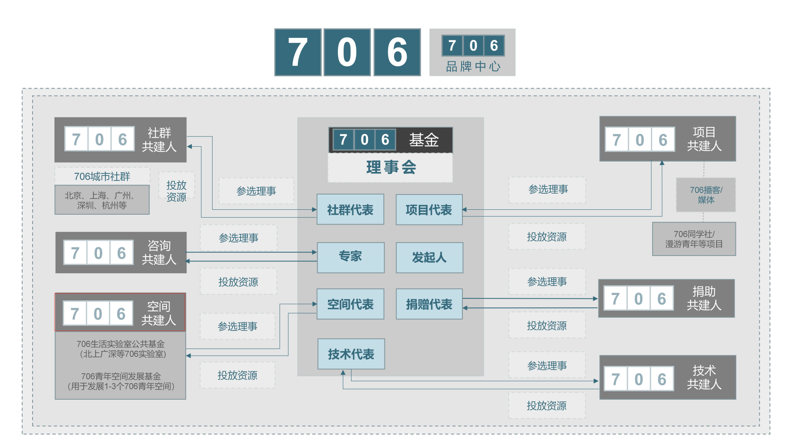

编者按：
之所以编辑这个简单版的706空间说明分类的文章，是因为包括706团队成员，目前面对706的各种空间形态，和各个城市发展的706空间，也没法说清楚，所以，我这边整理了和706空间相关的文案资料，梳理了一份706空间说明文档，大家可以根据这个，大概可以从“空间”角度理解706做的事情，以及为什么我们要做空间。如果你有任何问题，欢迎评论，有任何想法，欢迎 联系。
空间到底为何？
似乎没有人说得清青年空间是一种怎样的形式。它能不能作为一个代表，成为新时代下公共空间的范例？它能不能成为一片土壤，培养出自由自主的青年社群？它是不是真如众人所期待的那样，多元、包容、自由、秩序已经深入腠理？
我们自己也在思考和探索。
在商业和公益之间，他们都是如何抉择平衡的？
挣扎和困境，如何让理想在现实面前保持状态？
似乎更没有人说得清706为啥需要去探索各种空间形态？共享客厅， 生活实验室，小型青年空间，乃至到商业青旅，我们只是知道，这多样性的空间形态，背后承载了边界或模糊，或清晰的人际关系，体现了不同的生活表达形态，有公共表达，有私人生活。
在公共和私人生活之间，他们都是如何抉择平衡的？
如何继续往前行进，有没有更紧密的空间联合方式？
住宿、厨房、餐厅, 仅仅是人情相处，还是也有生活的公共性？
咖啡馆、酒馆、书店、深夜食堂、在分享一罐酒、一壶糖水、一段故事中间，是否不再仅仅是公共空间，而更具备温情的生活内涵？
空间到底为何？
是德性与正义下构建的理想城邦，还是基于社会契约下生活规范的妥协阵地，或是道德规范和日常实践下一种社会交互行为的场所。
空间到底为何？
706为何在虚拟经济，DAO社区，大行其道的现实社会中，要反其道而行，从2012到2020年，将80多平的小空间，辛辛苦苦，发展为600平左右的大空间?
706为何要在2021年疫情过后，706北京本部，连带10+个706生活实验室，轰然倒闭后，还是接着离开北京，在全国其他城市，尝试一场新的空间实验？
是的，对于706来说，线下实体空间，是我们的生命线，也是我们得以立足的根本所在，我们相信，我们可以通过创造空间来改变一切。
是的，对于706来说，空间具有社会内涵；是特定社会关系的载体，而不仅仅是活动的容器；空间直接参与了特定社会关系的建构。
空间的核心要义
第一：空间是社会的凝聚器
集体主义，我们可以在1920年代的苏联看到，也可以在1960年代一代下乡知青形成的社会共同体看到，这种类似以色列基布兹或美国公社或文革期农村公社的集体生活方式，这种乌托邦实验先驱们的理想，似乎又开始在召唤自以为21世纪新时代希望的青年人
在经历新自由主义思潮洗礼，还有商品资本社会的大规模发展后，大城市的年轻人作为一个一个独立分散的原子化的个体，需要找到新的归属感。706作为空间把原子化的个体聚合起来，担当了乌托邦式的民间自组织式空间。只是新的社会凝聚器，社会造血功能，或者新集体主义，面临太多历史的阴影和包袱，需要太多的努力。
第二：青年人生活的第一空间
青年在20多岁的时候，是特别需要环境和空间来激发想象力，拓展视野的，很多年轻人因为视野或者出身家庭或者受限于农村的视野狭隘，一辈子无法跳出普罗大众安居乐业的乌托邦梦，跳不出自己的小空间。
换言之，我们需要在最繁华，知识最密集，文化生态最丰富的区域，获得属于我们年轻人的空间，在这样的空间里，你才有可能真正感受到一个城市所给你带来的冲击和震撼，带给你的丰富的资讯和视野，让你敢于奋斗，获得自由；让你看到生活的界限，并且去打破这种界限。
第三： 创意和想象力的孵化器
作为载体，空间会有无数的涌现和偶遇（前沿思潮的涌现，思想交流者的偶遇，志同道合朋友的聚集）。里面的人，事，信息流，呈现出无数的交流场景，多样性和多元性，不仅仅体现在空间更加复杂的功能上面，而且还体现在容器承载的多样的思想和人群，更加体现在未来可能遍布各个城市的核心区域。 这样，才有可能孵化出各种创新创意，才有可能人和人更好的相遇相知，学习成长，以及共同协作和创造。
空间的进阶和分类
大城市青年的需求，社会节奏的变化，工作方式的变革，人和人社交模式和对话模式的变化，都会在空间上面有所体现，706之所以衍生出多种空间形态，也是和年轻人对空间需求的不同而产生的，换句话说，706旗下的各种空间形态，其实也参与了706里面各种社会关系的构建。
我们目前大体上将706旗下的空间形态分为下面几类：
706生活实验室
706生活实验室，是任何一个城市建立706社群的核心起步项目，同时706生活实验室自身也形成独特的共同居住文化，有可能引流社会潮流，详细的介绍参考
706城市客厅
这里面其实也包括“流动版共享客厅”，和“共治版共享客厅”几个不同客厅版本
706数字游民空间 (706Creator Space)
这个项目目前处于探索阶段，包括大理的706数字游民空间，到底是偏向生活实验室，还是偏向小型青年空间，这个都没有定论；如果探索成功的话，这个也有可能是个独立的项目；
706小型青年空间
这个是在706生活实验室，和“青年空间旗舰店”之间的过渡产品，一般而言，一旦一个城市已经存在1年之久的706生活实验室之后，就可以开始在本地的青年社群基础上，开展一个更具备开放性的706小型青年空间
706城市计划
上述从“706共享客厅”到“706生活实验室”的落地，基本标志着“706城市计划”的逐步实施过程，参考 706城市计划 单个城市实施步骤
同时，如果多个城市都开始创立“706生活实验室”之后，其实也开始逐步迈向联合互动，未来会形成一个跨城市的计划，参考 706跨城市计划（联合）规划
青年空间旗舰店
这个是空间形态的高级阶段，不光体现在面积上至少需要600平+，而且地理位置上估计只能在北上广深等核心大城市，而且也涉及到商业投资运作，所以执行难度是最大的
706空间联盟
这个是一旦上述的各种空间形态得以实现，并且706已经开了几个青年空间旗舰店之后，才得以实现的目标，需要在706内部空间的基础上，开始联合外部空间，形成更加广泛的网络
空间相关的其他项目
手册层面
比如，凯晶目前在牵头做的“706生活实验室”开源手册，之前师瑜做的“706共享客厅”指南，比如706住客访谈栏目，海玥在牵头做的“706生活实验室”制度手册等等
理论层面
新空间主义的一些想法和参考书籍 其实是可以发起空间主题的706共学小组，或者做个专栏或者其他
荒野公社
这个没有启动，不过未来肯定也会和空间发生关联，当然，和旅行，教育都有关联；
在整个706里面的位置
参考下面的红色框，706空间共建人，包括各个城市的各种706空间的负责（及团体代表），未来将以竞选“空间代表”理事的方式，加入706基金理事会。
